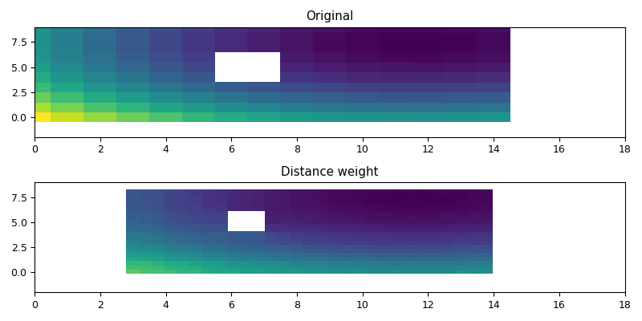

3.5.6.11. test_regrid_fortran_dstwgt.py – Test the fortran function bilin()¶

"""Test the fortran function :f:func:`bilin`"""
from vcmq import N, P, meshcells, minmax, code_file_name, os
from vacumm.misc.grid._interp_ import dstwgt
nxi = 15
nyi = 10
mv = 1.e20
u, v = N.mgrid[-3:3:nyi*1j, -3:3:nxi*1j]-2
vari = N.ma.asarray(u**2+v**2)
vari.set_fill_value(mv)
xi = N.arange(nxi)
yi = N.arange(nyi)
vari[int(nyi*0.4):int(nyi*0.4)+3, int(nxi*0.4):int(nxi*0.4)+2] = N.ma.masked
xxib, yyib = meshcells(xi, yi)
nxo = 40
nyo = 25
xo = N.linspace(int(nxi*0.2),int(nxi*1.2),nxo)
yo = N.linspace(int(-nyi*0.2),int(nyi*0.8),nyo)
xxob, yyob = meshcells(xo, yo)
vari.shape = (1, )+vari.shape
varo = N.ma.masked_values(dstwgt(vari.filled(), xi, yi, xo, yo, mv, 0), mv)
kw = dict(vmin=vari.min(), vmax=vari.max())
axlims = [min(xi.min(), xo.min()), max(xi.max(), xo.max()),
min(yi.min(), yo.min()), max(yi.max(), yo.max())]
P.figure(figsize=(8, 4))
P.subplot(211)
P.pcolor(xxib, yyib, vari[0], **kw)
P.axis(axlims)
P.title('Original')
P.subplot(212)
P.pcolor(xxob, yyob, varo[0], **kw)
P.axis(axlims)
P.title('Distance weight')
P.tight_layout()
figfile = code_file_name(ext='png')
if os.path.exists(figfile): os.remove(figfile)
P.savefig(figfile)
P.show()
P.close()